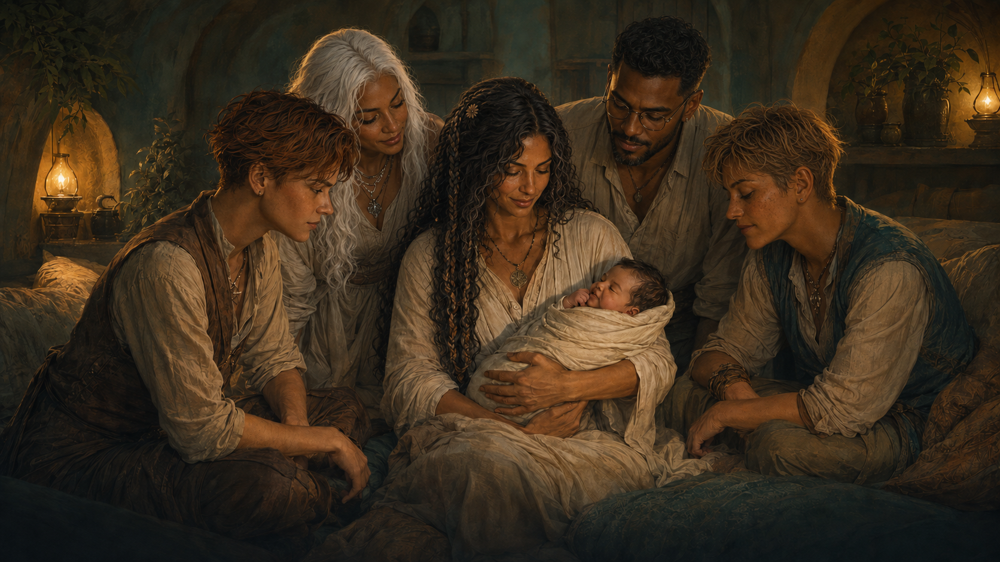
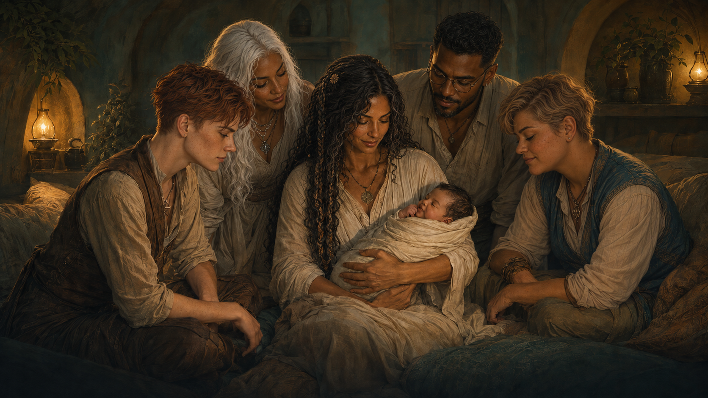
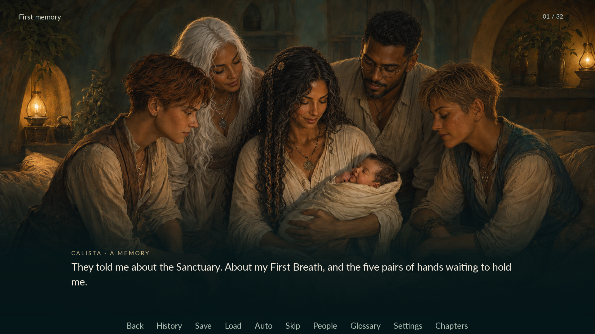
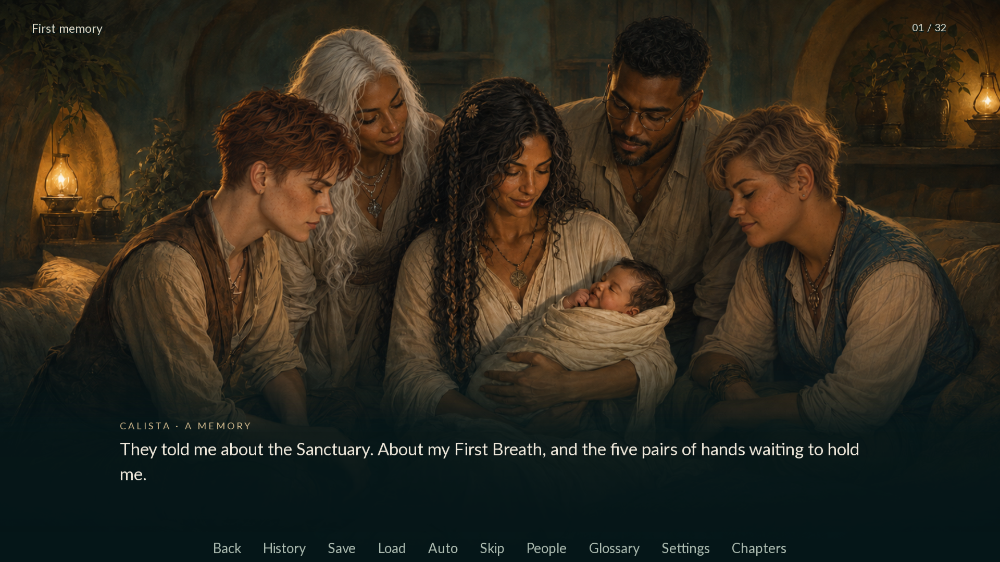

{kind=link}
Arin · far left
Keep the lean facial structure and attentive pose. A tighter auburn crop and paler skin strengthen their existing identity.
One scene, with Arin and Sage refined from the manuscript and wiki. Sage has fuller cheeks, a softer jaw and a medium upper-body build. Arin keeps their defined profile, with a tighter auburn crop and paler freckled skin.
This is a candidate for review. The game's opening artwork and character sprites remain at their existing versions.


Refined OriginalUse Original and Refined to compare a face without moving your gaze. Compare exposes a movable boundary. Raw generation shows why masking was needed: it also repainted details outside the requested characters.
Keep the lean facial structure and attentive pose. A tighter auburn crop and paler skin strengthen their existing identity.
Rounder cheeks and chin, a calmer sandy crop and a fuller neck bring the design closer to the written soft features and medium build.
Actual Ren'Py captures at the same opening line, made in an isolated test copy with the existing dialogue screen.


The image editor can make a meaningful facial and body adjustment while keeping the scene composition close enough for local compositing. GIMP retains the original underneath separate, editable character masks.
This single scene does not establish consistency across angles, expressions or later ages. The built-in image editor did not report its model version, so this result cannot independently confirm GPT Image 2.5 access.
All pixels outside the three edit masks match the original. Protected regions covering the other parents' faces, newborn and supporting hands also remain unchanged. Mask boundaries, preservation checks and remaining artistic limits are recorded in the test notes.
{kind=link}
{kind=link}